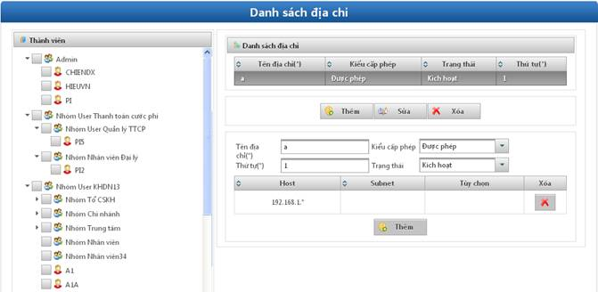
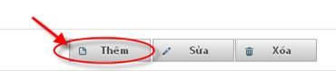
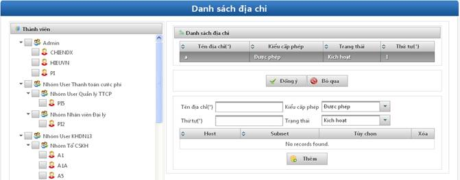
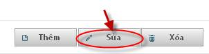
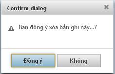

- Mục đích: Cho phép cấu hình danh sách các địa chỉ truy cập vào hệ thống.
- Bước 1: Click vào Quản lý địa chỉ.

Hình 15: Màn hình quản lý địa chỉ
- Bước 2: Thực hiện các chức năng Thêm/Sửa/Xóa.
ü Mục đích: Cho phép khai bảo thêm danh sách dải địa chỉ được phép truy cập vào hệ thống.
ü Bước 1: Click vào nút Thêm.

ü Màn hình thêm mới hiển thị.

Hình 16: Màn hình Thêm địa chỉ
ü Bước 2: Nhập dữ liệu cho các trường:
§ Tên địa chỉ: Cho phép khai báo tên của dải địa chỉ.
§ Kiểu cấp phép: cấp quyền cho địa chỉ:
Ø Được phép: Cho phép các địa chỉ đó truy cập vào hệ thống.
Ø Không được phép: Không cho phép giải địa chỉ này truy cập vào hệ thống.
§ Thứ tự: Thứ tự của giải địa chỉ.
§ Trạng thái: trạng thái hoạt động của địa chỉ:
Ø Kích hoạt: Dải địa chỉ đó được kích hoạt sử dụng.
Ø Không kích hoạt: Dải địa chỉ đó không được kích hoạt.
§ Thành viên: Click chọn danh sách các thành viên của các nhóm gán vào dải địa chỉ đó.
ü Bước 3: Click vào nút Thêm. Sau đó tiếp tục thêm các bản ghi cho dải địa chỉ đó.
ü Bước 4: Click vào nút Đồng ý. Để thêm dải địa chỉ đó vào danh sách.
ü Mục đích:Cho phép sửa danh sách địa chỉ.
ü Bước 1: Click vào 1 bản ghi trong Danh sách địa chỉ à Click vào nút Sửa.

ü Bước 2: Thực hiện sửa các trường dữ liệu (tương tự như Thêm mới).
ü Bước 3: Click vào nút Đồng ý.
ü Mục đích: Cho phép xóa các địa chỉ trong danh sách địa chỉ.
ü Bước 1: Click vào 1 bản ghi trong panel Danh sách địa chỉ à Click vào nút Xóa.
ü Bước 2: Hộp thoại thông báo xác nhận xóa được hiển thị.

ü Bước 3: Click vào nút ‘Đồng ý’ để xác nhận xóa.